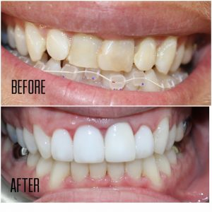
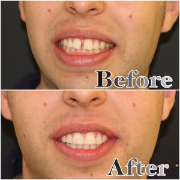
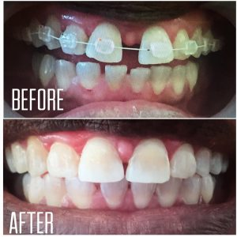
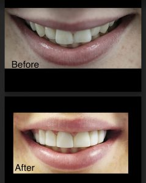
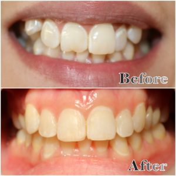

Are you considering Invisalign teeth aligners? Check out these five remarkable case studies to see how you could benefit.
If you’re one of the many people who are insecure with the way your teeth look, you’ll no doubt be searching for a solution. We want you to look good in pictures. We want you to have the confidence required to pass your dream job interview . And we are happy to help you along the way.
Thankfully, dental care and technology have advanced over the years, meaning that rather than opting for old-fashioned metal braces, we’re able to provide our patients with invisible teeth aligners. These aligners can fix an array of dental issues and we’re proud to showcase five examples of radical transformations that have come about as a result of Invisalign.
Case Study 1: Fixing Crooked Teeth
A clear advantage of Invisalign braces is that they can fix and straighten crooked teeth. The patient in the image below came to us with traditional braces they were unhappy with. They weren’t getting the results they were looking for and they were self-conscious about their appearance. On top of this, they were experiencing a number of problems only people with braces can truly understand. For all these reasons, they decided invisible braces were the way to go.
We removed the patient’s old braces and took a mould of their teeth. We created aligners for the patient and, over time, they were left with a stunning set of perfect teeth they were eager to show off.

Case Study 2: Filling in a Madonna Gap
Diastema, or gaps between teeth, is a fairly common occurrence. This often presents itself in the two front teeth. You might know of some famous cases — for example, Madonna has steadfastly refused to have her gap filled, despite her claim to fame. However, most people still feel insecure with a sizable gap between their teeth and look to teeth straightening as a solution.
This patient was one such case and opted for Invisalign. Straightening his teeth was simple and straightforward, and he was thrilled with the results.

Case Study 3: Bringing Teeth Together
Some people suffer from a great number of gaps between their teeth. This can happen for a number of reasons, but it’s normally a result of a mismatch between the size of a patient’s jaw bone and the size of their teeth. Whatever the case, it can leave people insecure and frustrated. Thankfully, Invisalign can, and does, help people with this exact problem.
Our patient below decided to ditch his old braces for a set of clear aligners and his transformation was remarkable — he was left with a set of white, straight teeth that would give anyone cause to grin.

Case Study 4: Eliminating Overbites
Overbites are extremely common, natural and nothing to be embarrassed about — but ignoring an overbite can be a slippery slope, so it’s best to get it sorted as soon as possible. This patient came to us to remedy their overbite, which we were able to do painlessly and quickly.

Case Study 5: A Set of Uniform Teeth
Our final case study is a great example of what Invisalign can do — in fact, you wouldn’t have even guessed the two pictures were of the same patient unless it was pointed out. When clear aligners can straighten teeth like this and give you that extra bit of confidence, it makes complete sense for you to pick up the phone and organise a free dental consultation today.

Here at Tooth Doctor, we think everyone is deserving of a great smile. In some cases, we offer monthly dental finance based on a five-year payment plan. Get in touch today to organise a free dental consultation.